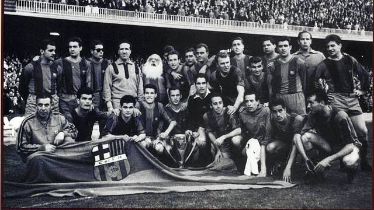

The History of FC Barcelona
FC Barcelona was founded on November 29, 1899, by a group of football players led by Joan Gamper. The club quickly became an important part of life in Barcelona. Its famous blue and red colors have been worn for more than a century, and fans often call the team "Barça." The club's motto, "Més que un club," means "more than a club," and shows how much it means to its supporters.
Barcelona won its first La Liga title in 1929 and became one of Spain's top teams over the years. In 1957, the club moved into Camp Nou, which became one of the most famous stadiums in football. One of its biggest moments came in 1992, when Johan Cruyff's team won the European Cup for the first time. In 2009, Barcelona won six trophies in one year under Pep Guardiola, including La Liga and the Champions League.
Some of Barcelona's best years came with players like Xavi, Andrés Iniesta, and Lionel Messi. Under Guardiola, the team became famous for its passing style and won the Champions League in 2009 and 2011. Barça won the treble again in 2015 with Messi, Neymar, and Luis Suárez leading the attack. The club has continued to develop young players through La Masia, its youth academy.
Key Moments in Club History
- 1899: FC Barcelona is founded by Joan Gamper and a group of players.
- 1929: Barcelona wins the first La Liga season.
- 1957: The club moves into Camp Nou.
- 1992: Barcelona wins its first European Cup.
- 2009: The team wins six trophies in one calendar year.
- 2015: Barça wins its second treble.
